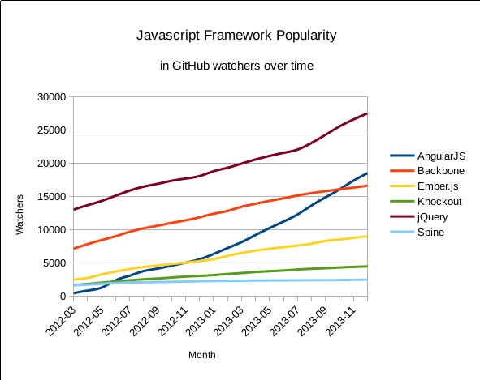

An intoduction to

angularjs.org
Presentation by Victor Pham and Jeremy Thacker
Why a framework?
Client side scripts have become client side apps.
We need a full-fledged Javascript framework!
Why AngularJS?
- It's made by Google.
-
It's lightweight.
100.4 kB minified, no dependencies - It's popular.
Why AngularJS?

* Graph data obtained with the help of GitHub Archive and Google bigquery.
What is AngularJS?
A toolset adapting traditional HTML to the modern world, following a strict philosophy.
The AngularJS Philosophy
"Angular is not a framework, it's an HTML compiler"
-Misko Hevery, AngularJS creator
- HTML is the language of the web, but it's static. Let's fix that.
Web programming should be declarative
-
Directives
- {{item}}


- Ultra MVC - Just set up your model, view, and controllers and let AngularJS wire them together
- No main()
- Highly modular and re-usable
Use POJOs for everything
- No extraneous getters and setters
- No classes to learn/extend
- Highly portable
Tests are essential
- Modular and decoupled
- Dependency injection is front and center
- Built in mock HTTP provider
"Angular is not a framework"
- AngularJS should be used to build frameworks
- Includes key framework components (routing, form validation, UI animations, etc), but in separate "services"
Demo
Course Catalog
Topics we'll touch on
- Controllers
- Views and Directives
- Services
Routing
var courseCatalogueApp = angular.module('courseCatalogueApp', [
'ngRoute',
'courseCatalogueControllers'
]);
phonecatApp.config(['$routeProvider',
function($routeProvider) {
$routeProvider.
when('/courses', {
templateUrl: 'partials/course-list.html',
controller: 'CourseListCtrl'
}).
when('/courses/:courseId', {
templateUrl: 'partials/course-detail.html',
controller: 'CourseDetailCtrl'
}).
when('/mobile/courses/:courseId', {
templateUrl: 'mobile/partials/course-detail.html',
controller: 'CourseDetailCtrl'
}).
otherwise({
redirectTo: '/phones'
});
}]);
Where is AngularJS going?
-
Better modules
- ES6 enhanced
- More re-usable
- Simpler dependency injection
- More services split out into stand-alone modules
- Templates - HTML unparsed until needed
- Easier, more effient observation of elements